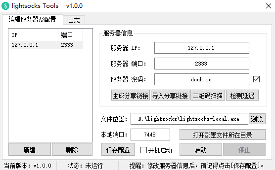

一个轻量级网络混淆代理，基于 SOCKS5 协议。只专注于混淆，用最简单高效的混淆算法达到目的；不会放大传输流量，传输流量更少更快，占用资源更少。
注意：Lightsocks 不支持自定义密码，程序会自动生成超长高安全性密码，端口可以自定义。
Lightsocks Linux 一键脚本：『原创』Go语言轻量化 网络混淆代理工具 —— Lightsocks 一键脚本
当前版本：1.0.1
主要功能
- 支持 多服务器(账号)管理
- 支持 直连模式、PAC模式、全局模式（和 SSR 的系统代理设置功能一样）
- 支持 生成/导入 分享链接功能
- 支持 开机启动
- 等等
直连模式说明：
PAC模式、全局模式很多人能理解是什么意思，但是部分人不清楚直连模式是什么鬼，我就简单解释一下。
你们知道 PAC模式和全局模式就是软件设置了系统代理设置，然后浏览器会读取系统代理模式，比如访问谷歌，会判断PAC内是否有谷歌域名，如果有就走代理，如果没有就直连，而全局模式则是所有网站走代理。
而直连模式则代表不设置系统代理模式，选择后会初始化系统代理设置。然后就需要在相应软件中配置代理服务器 HTTP协议 127.0.0.1 7448(默认)，这样相应软件才会走代理，例如 Chrome 浏览器代理管理扩展 SwitchyOmega（点击查看新手使用教程）。
截图展示

使用方法
本软件是一个辅助软件（可视化UI操作），他无法独立使用，需要配合 Lightsocks Windows命令行版客户端使用。
所以要使用该软件请先下载 Lightsocks Windows命令行版客户端：逗比云地址 、Github地址（请选择 lightsocks_X.X.X_windows_386.tar.gz 或 lightsocks_X.X.X_windows_adm64.tar.gz）。
- 下载 Lightsocks Windows命令行版客户端后，放置到任何位置（路径中不能包含中文和空格，否则PAC失效）
- 下载 Lightsocks Tools 客户端文件，放置到任何位置（建议和 命令行版客户端放在一起），并运行软件。
- 运行软件后填写 Lightsocks 账号或者导入 Lightsocks 分享链接，并点击 浏览 按钮，选择命令行版客户端文件（拖拽文件到软件窗口中）。
- 点击 启动 按钮（或者右键托盘菜单 - 启动）
- 根据需求在 托盘菜单 - 代理模式 中可以选择 直连模式（默认）、PAC模式、全局模式。
无法使用？请先使用 [账号自检] 功能检测账号是否可用，如果提示可用，那么请检查系统代理设置是否正常！
下载地址
更新内容
2018年03月14日，版本 v1.0.1
1. 修复 开机启动后，没有自动启动代理的问题。
2018年03月12日，版本 v1.0.0
1. 发布 正式版本。
—— 已知BUG：日志中可能部分中文会出现乱码，影响小，后续更新会修复。
注意事项
- 该软件仅支持 Windows 系统，至于 Linux 和 Mac 用户...（
 啦啦啦~）
啦啦啦~） - Windows 7 及以后的系统如无法使用部分功能，请 [以管理员身份运行]。
- 该软件由 E语言 编写(重拾初中姿势)，所以部分杀毒软件可能报毒，我原创的软件绝对没有病毒！
其他说明
Windows 10 系统不显示启动/停止/账号自检等通知信息
这个问题一般是因为 Windows 10 系统的通知被关闭导致的，请去控制面板 - 通知和操作 - 开启 获取来自应用和其他发送者的通知 。
懒得截图，图片用的是 Brook Tools 文章里的，不要在意~

有问题或者反馈BUG（需提供可复现步骤）请在下面留言！
转载请超链接注明：逗比根据地 » 『原创』更方便的Windows系统 Lightsocks 客户端 —— Lightsocks Tools
责任声明：本站一切资源仅用作交流学习，请勿用作商业或违法行为！如造成任何后果，本站概不负责！


直连模式代表不设置系统代理设置（相当于初始化系统代理设置），你需要浏览器扩展之类的去管理代理，才能让浏览器翻墙。
系统代理设置有误或者没有设置？
还是系统代理设置正常，浏览器没走代理，或者浏览器代理设置有问题？
请 Telegram群组(TG使用教程)私聊联系我讨论解决。
只有在开机自启动的情况下，才会自动[启动]，其他时候手动运行客户端，都不会自动[启动]。